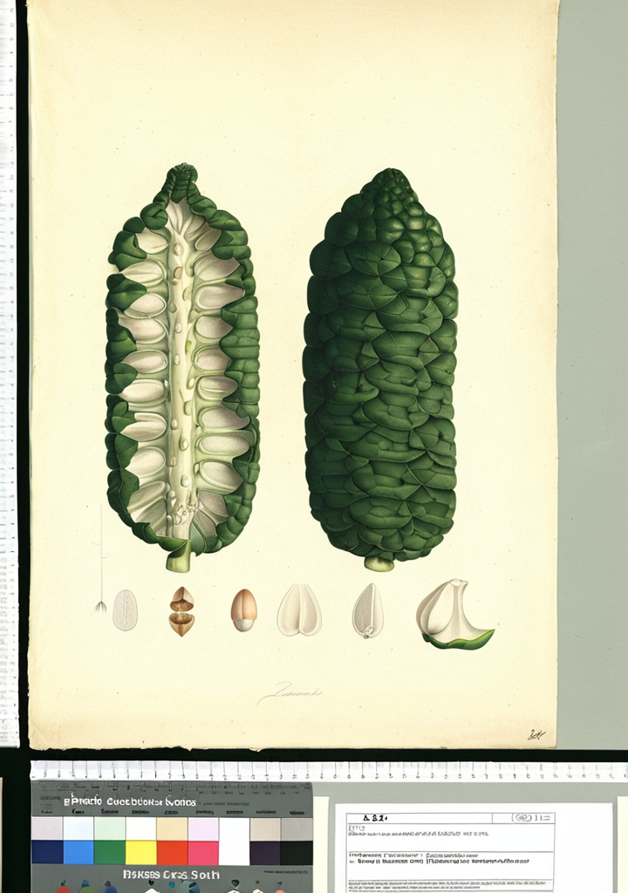

Annona muricata
Graviola
Graviola
La Annona muricata, conocida como graviola o guanábana, es un árbol de hoja perenne de hasta 10 metros de altura, nativo de las regiones tropicales de América. Su fruto, de sabor dulce y ácido, ha sido tradicionalmente consumido como alimento y empleado en medicina popular en numerosas culturas latinoamericanas.
En la medicina tradicional amazónica y caribeña, las hojas de graviola se utilizan en preparaciones para calmar la ansiedad y promover el descanso, mientras que el fruto fresco es apreciado por su sabor refrescante y valor nutricional.
Clasificación Botánica
| Familia | Annonaceae |
|---|---|
| Género | Annona |
| Especie | muricata L. |
| Origen | Trópicos de América, 0-1 000 msnm |
| Partes usadas | Hojas, frutos, corteza |
Compuestos Activos
Las hojas contienen acetogeninas anonáceas (annonacina, squamocina, asimicina), alcaloides (anonaína, asimilobina), flavonoides (quercetina, kaempferol) y compuestos fenólicos. El fruto aporta vitaminas del grupo B, vitamina C y fibra dietética.
Usos Tradicionales
En la medicina tradicional, las hojas de graviola se preparan en infusión para reducir la ansiedad y favorecer el sueño. El fruto se consume como alimento y en jugos refrescantes. La corteza y raíces se han utilizado empíricamente en algunos sistemas medicinales tradicionales.
Evidencia Científica
PubMed 1667573 DOI McLaughlin JL et al. 1991. Annonaceous acetogenins: new bioactive bis-tetrahydrofuran compounds. J Nat Prod. 1991.
PubMed 32848736 DOI Mishra SH et al. 2020. Annona muricata: pharmacology, toxicology and uses. J Ethnopharmacol. 2020.
Precauciones
El consumo tradicional del fruto como alimento es considerado seguro. Sin embargo, los extractos de hoja y acetogeninas en concentraciones farmacológicas pueden afectar el funcionamiento del sistema nervioso, especialmente a dosis elevadas. Personas con enfermedad de Parkinson deben evitar extractos concentrados. No sustituya tratamientos médicos por preparaciones de graviola sin supervisión profesional.